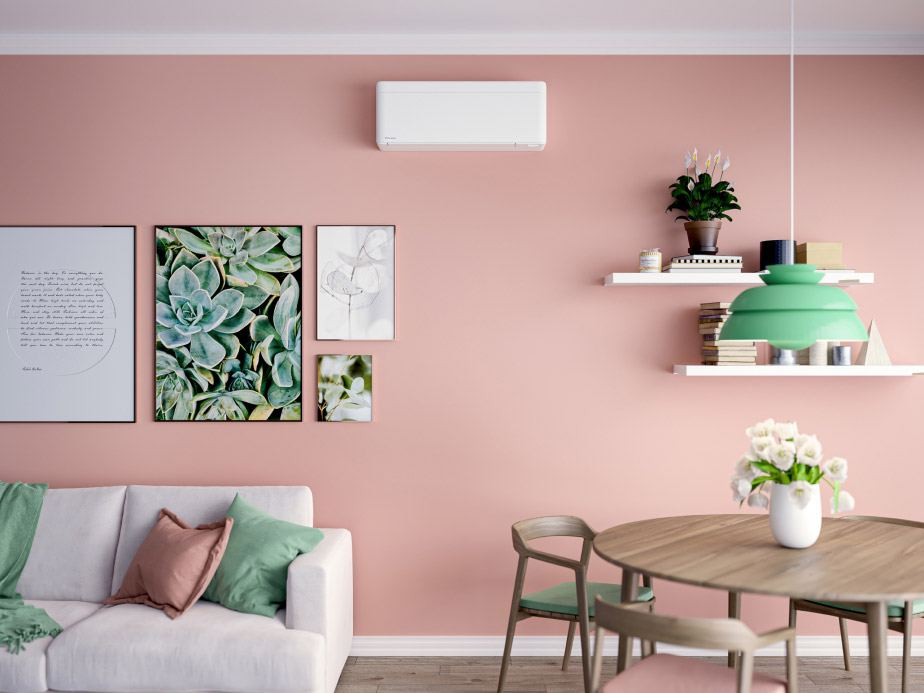

Forside/Drift
Service og drift
Vi anbefaler service hvert andre år. Da går varmepumpen lettere og reduserer strømkostnadene dine. Vi utfører service på alle varmepumper, uansett merke og leverandør.
Service
Derfor lønner service seg
En varmepumpe som får jevnlig service går lettere, bruker mindre strøm og holder lenger. Vi tar service på pumpen du har – også om du kjøpte den et annet sted.
- Anbefalt intervall: hvert andre år.
- Alle merker og leverandører.
- Fast pris avtales før vi kommer.

Vedlikehold
Slik tar du vare på varmepumpa
En varmepumpe er relativt lett å vedlikeholde, og krever ikke så mye innsats for å holde seg i god stand. Likevel er det et par ting du bør gjøre jevnlig.
Støv i filteret gir dårligere luftgjennomstrømning og høyere forbruk. Sjekk filteret med jevne mellomrom.
Løv, snø og is rundt utedelen gjør at pumpen må jobbe hardere enn nødvendig.
Jevn drift gir bedre virkningsgrad enn å skru pumpen av og på etter behov.
Kontroll av anlegget hvert andre år fanger opp ting du ikke ser selv.
Tips og råd
Vegg, tak eller gulv?
Når det gjelder valg av varmepumpe, er mange opptatte av effekt, energiklasse og pris. Velg av innedel har også stor betydning for komfort og varmefordeling.
| Modell | Plassering | Passer når |
|---|---|---|
| Veggmodell | Høyt på vegg | Du vil ha jevn varme i oppholdsrom og enkel montering. |
| Takmodell | I taket | Du har lite veggplass, eller vil ha varmen mer fordelt. |
| Gulvmodell | Lavt på vegg | Du vil ha varmen nede der folk oppholder seg. |
Spørsmål og svar
Det kundene spør om
Ja. Vi utfører service på alle varmepumper, uansett merke og leverandør.
Vi anbefaler hvert andre år.
Befaring er gratis. Du får et tilbud etterpå, uten forpliktelser.
Ja – velger du videobefaring, eller sender bilder av pumpen du har fra før, får du ekstra rabatt.
Skal vi ta service på pumpen?
Ring 40 40 20 33 eller bestill service, så avtaler vi et tidspunkt.